User guide v2.0 · 16 September 2026 · back to the app · route map
1. Welcome
Modus is a shared planning platform for construction haulage on linear infrastructure programmes — rail, road and utility corridors. Every delivery team forecasts its material movements into it, planners approve them, and the week's haulage commitment — how much moves on which route, on which day, with how many trucks — comes out of it. A route map shows where the hauls run, what is in the way on the roads where the country's road authority publishes it, and which works package owns each stretch of the alignment.
This guide says team for a delivery team. Your organisation may call them packages, contractors or IPTs — the app uses your organisation's word and its own team names, and shows money in your organisation's currency. Where this guide shows a currency it is only an example.
This guide is for the people who use the platform: team submitters, planners and anyone who reads the route map. It explains each screen, what to type, what the numbers mean and where they come from. It deliberately leaves out internal names — the technical guide has those.
1.1 The two surfaces
| Surface | Address | Who | What it answers |
|---|---|---|---|
| Staff app | the site address (sign in with your access code) | team submitters, planners, admins | What are we hauling, from where, to where, in which month — is it approved — and what does the week ahead look like day by day? |
| Route map | the site address followed by /map/ | staff, and anyone given the map password | Where do the hauls run, what restrictions are on the roads, which team owns the ground, and what is moving month by month? |
1.2 Roles
| Role | You sign in with | You can | You cannot |
|---|---|---|---|
| Team submitter | your team's access code | submit, edit and withdraw your team's forecast lines; use the Look-ahead for your lines; type actuals, spread a shortfall, type stock consumption; see the Dashboard and the route map | see another team's quantities; approve; open the Data pages |
| Planner | the planner code | everything above for every team; approve or reject lines; maintain Locations, Routes, Zones and Config | change the admin settings that need the admin token unless you have it |
| Admin | the admin code | as planner, plus the admin token for baking routes, zones, haul roads and configuration saves | — |
The route map and this guide are not reachable by anyone who merely has the address. Signing in to the app opens both. Someone outside your organisation — a client or a stakeholder — can be given the separate map password, which opens the map and nothing else; it does not open this guide.
Access codes are shared per role and checked by the server on every request. A team code shows you only that team's lines, wherever you look. Per-person logins with passwords are planned as the next security phase; until then treat your code as you would a shared key.
1.3 How the numbers are built — in one picture
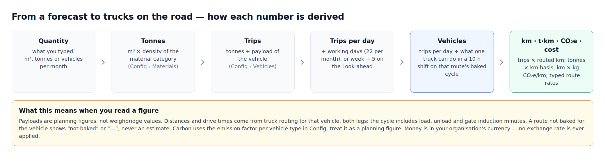
Everything you type is a quantity per month on one route for one material and one vehicle type. The platform converts it to tonnes using the material's density, to trips using the vehicle's payload, and to vehicles using how many trips one truck can make in a 10-hour shift on that route's measured cycle. Distances and drive times come from truck routing for the exact vehicle, out laden and back empty. Section 9 explains each step and what "planning figure" means.
2. Getting started
2.1 Signing in
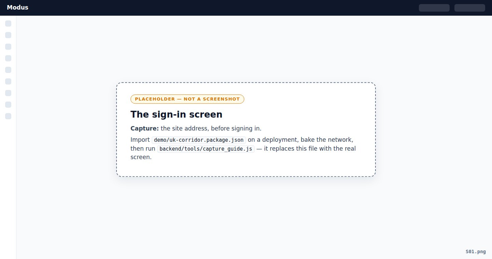
- Open the site address and press Staff sign in at the top right.
- Type your name and your access code. Your name is stamped on the lines you submit and the weeks you confirm, so use the name your colleagues know.
- The code is kept for this browser tab only; closing the tab signs you out. Your name and your last page are remembered on this computer.
- If the platform says the code is not recognised, check for a trailing space and that you have the current code — codes are rotated by the planners.
2.2 Finding your way around
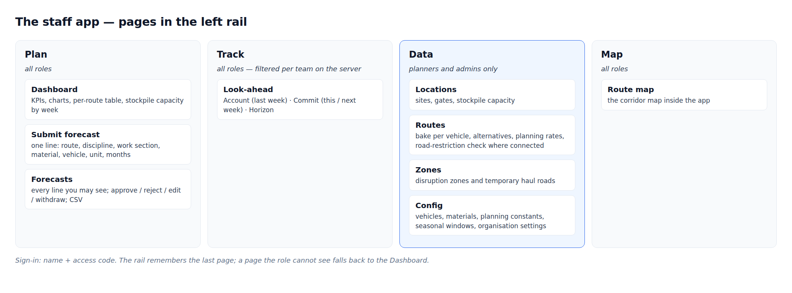
The left rail is grouped: Plan (Dashboard, Submit forecast, Forecasts), Track (Look-ahead), Data (Locations, Routes, Zones, Config — planners and admins only) and Map (the route map inside the app). The rail can be collapsed to icons with the button at its foot; it remembers the page you were on. The Forecasts entry carries a badge with the number of lines waiting for approval when you are a planner.
- Vehicle names can be shown in English trade names or as EU vehicle categories — the toggle in the header changes the label only; nothing stored changes. Where your organisation works in a country with local vehicle names, a third option appears; a vehicle with no local name falls back to the EU string with a star.
- The header shows your role and, for a team code, your team's name. Sign out is in the header.
- The app works in a desktop browser at 1440 px wide or more; the staff app has no phone layout. The route map does.
3. The Dashboard
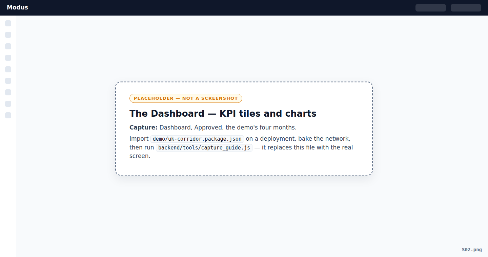
The Dashboard is the strategic view of the forecast. Filter by status (Approved, Pending or all), unit, material, vehicle and month range. The six tiles read Total material, Total trips, Truck-km, CO₂e, Intensity and Peak month; below them are charts for material demand over time, vehicle trips over time, carbon over time, the material split and the top routes by tonnage, then a per-route table (Route planning detail) with the cycle time, trips per day and vehicles for each route and vehicle.
- Truck-km, CO₂e and vehicles use the routed distance and cycle for each line's route and vehicle. A route that is not yet baked for that vehicle shows "not baked" rather than a figure.
- Vehicles are trucks, not trips: peak demand per day divided by what one truck can physically do in a shift. Hover the tile for the rule.
- The Dashboard does not calculate anything of its own; it reads the same figures the Look-ahead and the route map use, so the three cannot disagree.
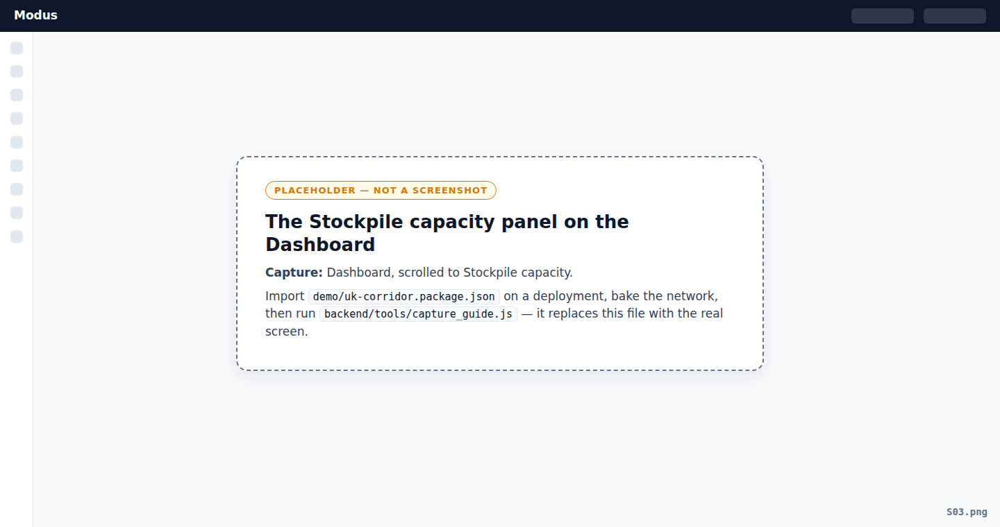
Stockpile capacity shows how full each stockpile is at the end of a week — the weeks of this month and next are pills above the chart, the current one marked. A bar turns amber from 90 % and red past its recorded capacity; hover it for what came in and went out that week and the room left. Locations that hold stock but have no recorded capacity are listed beside the chart with their balance and "max —": no capacity recorded is not zero capacity. A week's closing balance is the opening quantity plus the week actuals typed for deliveries there, minus the consumption typed on the Look-ahead's Account view (§6.4); a week nobody reported counts as nothing. The panel is read-only.
4. Submitting a forecast
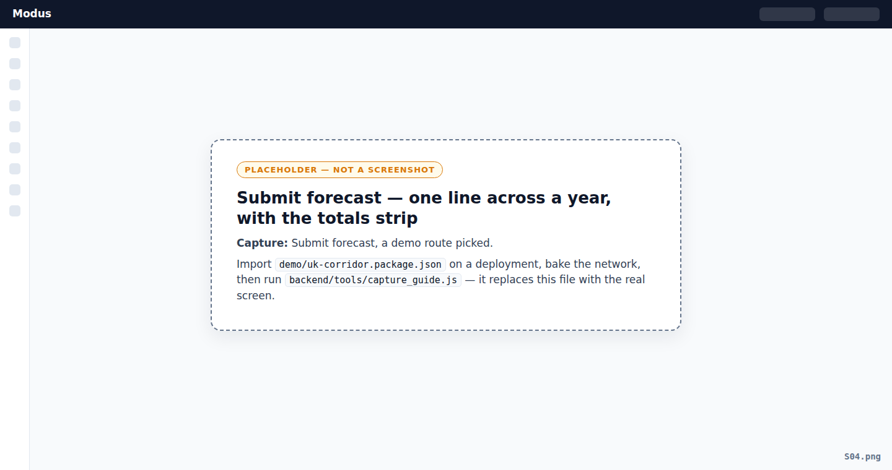
A forecast line is one material moving on one route with one vehicle type, month by month. If the same material will move on two vehicle types, that is two lines. Fill the form top to bottom:
| Field | What to choose | Notes |
|---|---|---|
| Origin → Destination | Where the material moves from and to | The Route reference fills in by itself. Only pairs that exist on the network are offered — an origin must supply the material category and the destination must receive it. If there is no route for a pair, ask a planner to create it. |
| Discipline | Your organisation's list — by default utilities, temporary works, earthworks, substructure, structures, superstructure, stations, MEP, energy / electrification, and control, command & signalling | Two disciplines can share a route and month; you will see a caution on save so both are visible. |
| Work section | Your programme's sections (WS1, WS2 …) | Bands overlap on the ground, so the section belongs to the line, not the site. |
| Material category | Earthworks / soil, Small aggregate, Large aggregate / ballast, Precast / concrete, Steel / rail, General / imported | Sets the density used for m³ ↔ tonnes and which vehicles are allowed. |
| Material description | free text, optional | For your own reference on the line. |
| Vehicle | The planning vehicles (EU categories) are listed first, other vehicles below | A vehicle greyed out and labelled "not used for this material" is not allowed for that category. The payload of the vehicle you pick is what turns quantity into trips. |
| Input unit | m³, tonnes or vehicles | Steel / rail and General / imported are entered in tonnes (not volume-convertible). The strip shows the conversion. |
| From year / To year | Any range in the five-year horizon | One row of twelve monthly cells per year. Narrowing the range later never deletes months outside it. |
| Team | Locked to your team for a team code | Planners must choose which team the line belongs to. |
4.1 The totals strip
As you type, the strip at the foot of the form updates: the total, the equivalent tonnes, average and peak movements per day (the month's loads divided by 22 working days), and vehicles needed (average and peak) — the movements per day divided by the trips one truck can make in a shift on this route with this vehicle. That last figure needs the route to be baked for the vehicle; if it is not, the strip says "not baked" and nothing is estimated in its place. Tell a planner: baking is a one-click action on the Routes page.
4.2 Warnings you may see
- Seasonal restriction — where your configuration defines a seasonal window (for example a spring-thaw season when axle-weight limits are likely on secondary roads), a quantity in that window on a restricted vehicle shows the window's warning. It warns; it does not block or re-route. With no windows configured, nothing is shown.
- Not baked — the route has no measured geometry for this vehicle yet. You can still submit; the line simply carries no distance or vehicle figures until a planner bakes it.
- Caution on save — another line already exists for this route and month (for example a second discipline). Both stay; the caution makes sure you know.
4.3 Saving, editing and withdrawing
Save writes every month in the range; a cell left at 0 removes that month. The line appears on the Forecasts page as Pending until a planner approves it. To change it later, open the line from the Forecasts page with Edit — the whole year range reopens in this form. Withdraw removes the whole line across every year it covers; the confirmation tells you the span and the number of months.
5. The Forecasts page
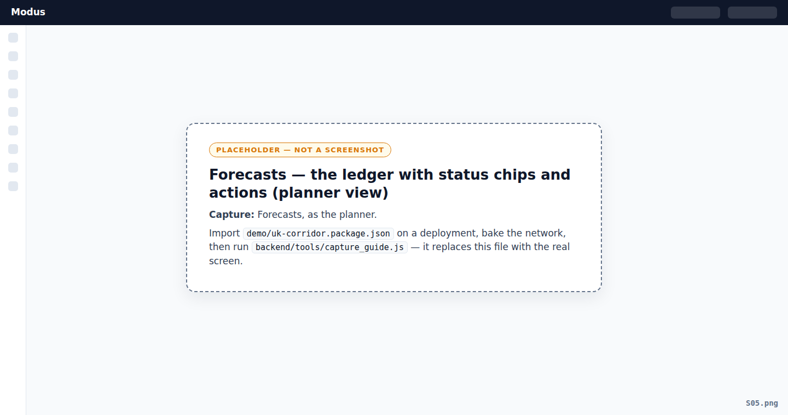
Every forecast line you are allowed to see, grouped per route, discipline and work section across every year it covers. Filter by status (the count chips are clickable), team, discipline, "mine only" and free text. Export CSV downloads what is on screen.
| Status | Meaning |
|---|---|
| Pending | Submitted, not yet approved. Nothing downstream (the map timeline, the Look-ahead, stock) reads a Pending line. |
| Approved | Approved by a planner. Weeks are created for it, it plays on the route map timeline and it appears in the Look-ahead. |
| Rejected | Returned with a reason, which the submitter can read on the line. Edit and resubmit. |
| Mixed | A line that spans several months with different statuses. |
| no team | A line with no team set — visible to planners only until one is set. |
5.1 For planners: approving and rejecting
- Approve and Reject act on the line (route, discipline and section), not on the whole route. A rejection needs a reason — the form refuses an empty one — and the reason is shown to the submitter.
- Approving a month creates its weeks in the Look-ahead immediately and puts the line on the route map. Reopening or rejecting an approved month later does not delete weeks that already carry typed actuals; they simply stop refreshing and show "month is now Pending".
- Approval does not check that the route is baked for the vehicle. The Look-ahead will flag an unbaked line (UNBAKED) and show trips only. Bake before you approve, or straight after.
6. The Look-ahead
The Look-ahead turns an approved monthly forecast into a weekly plan, and the week that contains today into a daily commitment sheet for hauliers. It has three views, switched with the pills under the page title: Account (last week — what actually happened), Commit (this week, or next week — the plan by day) and Horizon (the coming weeks as totals). It opens on Commit.
6.1 How weeks work
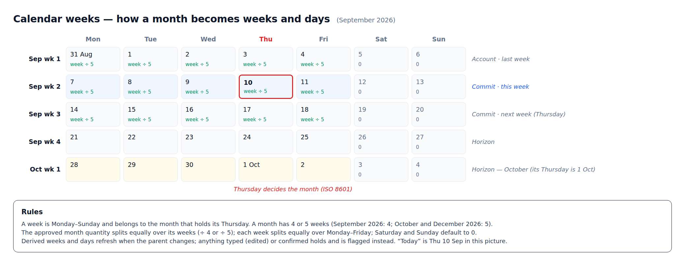
- A week runs Monday to Sunday and belongs to the month that holds its Thursday — ISO 8601 week numbering. A month therefore has four or five weeks; September 2026 has four, October and December five.
- An approved month's quantity is split equally over its weeks, and each week equally over Monday to Friday. Saturday and Sunday default to zero.
- Anything you type over — a week or a day — stops following the split and is marked as typed. If the month is later re-approved with a different quantity, typed weeks keep their values and show PARENT CHANGED rather than silently moving.
6.2 The weekly rhythm
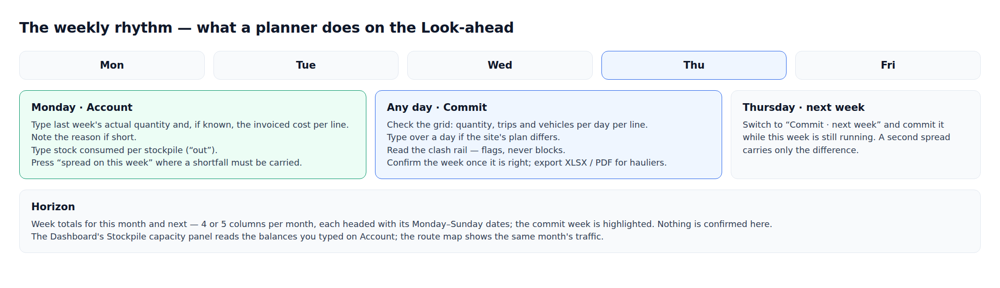
6.3 Commit view — this week by day
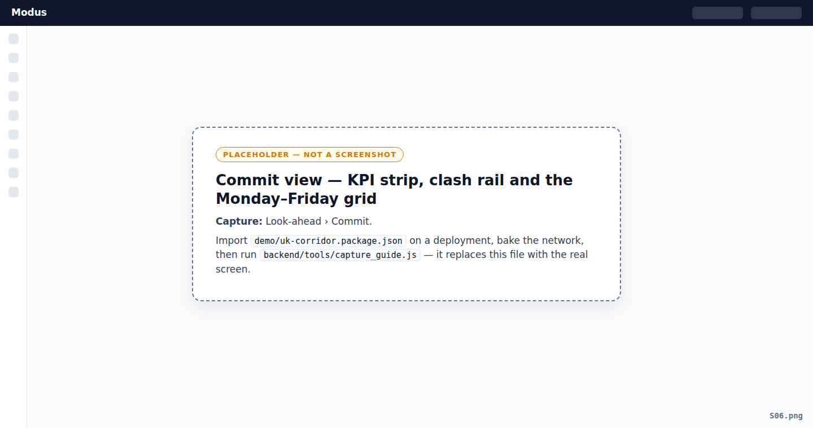
The header shows the week's dates. The KPI strip reads: planned this week (tonnes), trips, vehicles per day at the peak, t·km, planned cost (or "no rate typed"), last week's shortage, and last week delivered: n of m lines — a line counts as delivered when the actual reached 98 % of the plan.
The clash rail under the strip lists flags for the week — up to three, then "+N more". Flags never block anything; they tell you what to look at (§10 lists them all). The most important for a team is SHARE: another team is on the same route, or the same origin and destination, on the same day. You are told you share it — by the other team's name — without seeing their quantities.
Each row of the grid is one line: origin → destination, a team chip, a work-section chip, the material and the vehicle. The Monday–Friday cells show the quantity and, beneath it, trips · vehicles for that day — for example 17 tr · 3 veh. Today's column is tinted.
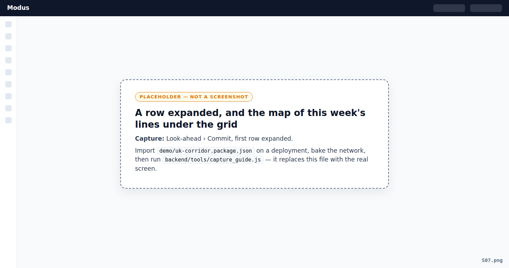
- Click a row to see km per trip, km per day, km per vehicle, t·km, the cycle time and the cost of the line — or "rate not set" if no rate has been typed on the route.
- Type over a day when the site's plan differs from the even split. The cell shows a typed marker and the day no longer follows the week total. If the days then no longer add up to the week, the line shows DAYS ≠ WEEK — a flag, not an error; you can still confirm.
- Unbaked line — a route with no measured geometry for the vehicle shows trips but
veh —, and the flag UNBAKED. Nothing is estimated in its place; ask a planner to bake the route. - The week map under the grid draws this week's lines in their team colour, origin dot navy and destination dot red; hover a line for its quantity and trips. A line with no geometry is listed under the map rather than drawn as a straight line.
Confirming the week
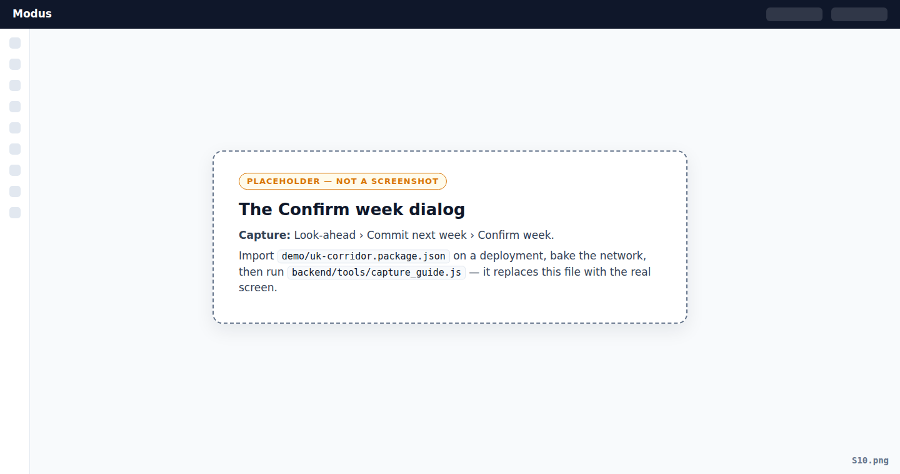
Confirm week (the green button, top right) is one act for the whole week: every planned cell locks, actuals stay typeable, and the sheet becomes the commitment. The dialog names the week and the number of lines and has four free-text notes — weather, wetness, traffic, other — for the record. Confirm remaining lines appears when some lines are already confirmed. A confirmed week can be re-opened to change the plan; nothing is deleted.
This week / next week
On Thursday you may want to commit next week while this week is still running. Switch the pill to Commit · next week: its days are created on demand and can be typed and confirmed in the same way. A shortfall spread on Thursday with a partial actual and again on Friday with the full figure carries only the difference — the platform never counts the same shortfall twice.
Exporting for hauliers
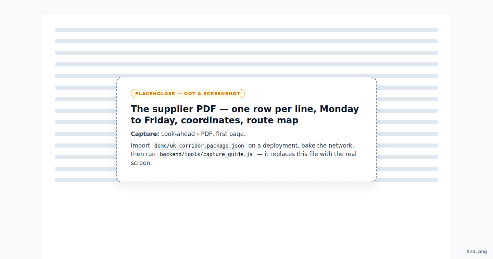
- Export XLSX — a workbook with one row per line per day (quantity, tonnes, trips, vehicles, km, t·km, cost, cycle and its source, day status), a Clashes sheet and an About sheet. Weekdays only.
- PDF — the one-week commitment sheet: landscape, a route map on the first page, one row per line sorted by origin, Monday to Friday columns with quantity and
trips tr · veh, origin and destination with coordinates, the week total, km per trip and the cost where a rate is typed, then the flags and the footer caveats. It says CONFIRMED only when every line is. It is a commitment sheet, not a delivery note: payloads are planning figures, not plated weights, and km come from truck routing. - If the PDF's map is a drawn schematic rather than a photo map, the caption says the map service could not be reached; the sheet is otherwise identical.
6.4 Account view — what actually happened last week
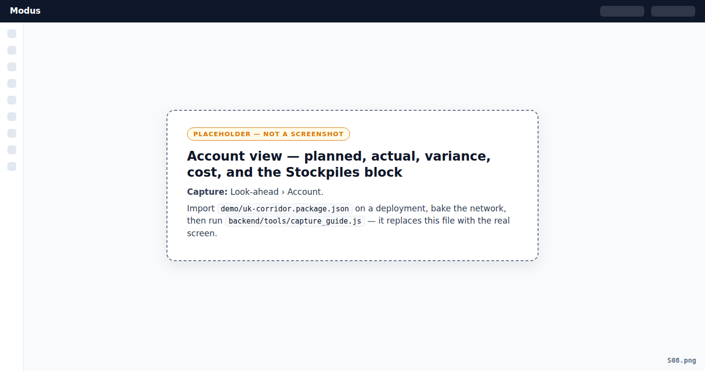
Account shows last week per line: planned, an actual box, the variance (green when over-delivered, red when short; an empty actual means "not reported", never zero), an actual cost box for the invoiced or agreed cost of the week, a note, and the status of the shortfall — held, carried or remaining.
- Type the actual quantity as it was delivered. Saving an actual never changes next week's plan by itself.
- spread on this week carries a shortfall into the commit week, spread evenly over the remaining weekdays from today. Press it once the figure is known; pressing it again after a correction carries only the difference. It refuses if the target week is already confirmed — re-open the week first.
- Actual cost is the first place the platform records money spent rather than planned; the KPI strip compares it with the planned cost where rates exist.
- The Stockpiles block at the foot lists each stockpile for the account week: opening balance, inbound (from the typed actuals on routes delivering there — a route nobody reported counts as nothing), an out box for what was consumed, the closing balance and the remaining capacity. Type the consumption once a week; the Dashboard's Stockpile capacity panel and the route map's stockpile gauges read it.
6.5 Horizon view
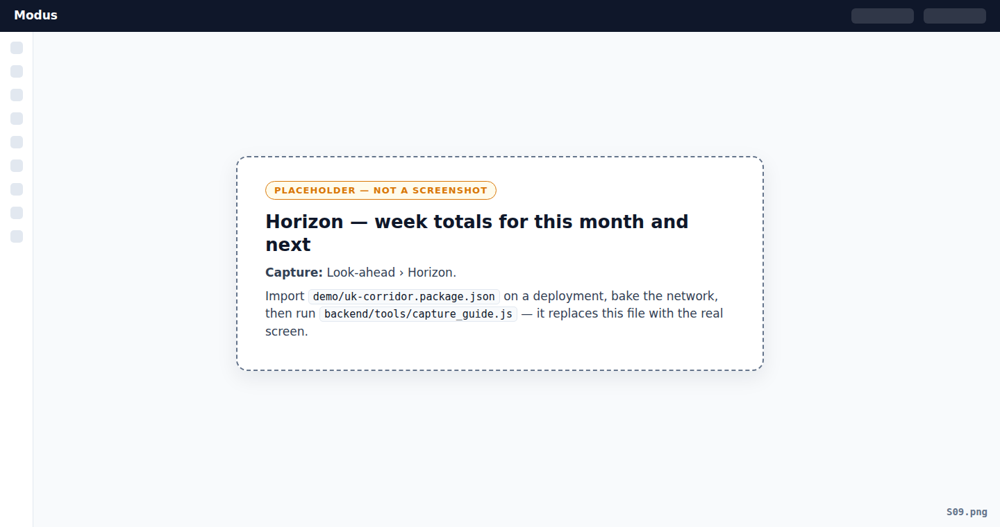
Horizon shows week totals for this month and the next — four or five columns per month, each headed with its Monday–Sunday dates — with the commit week highlighted. Nothing is confirmed here; it is the look-ahead in the ordinary sense: what is coming, so make-ready and early warning can happen.
Open the Look-ahead before a meeting: the page reads a lot of data and can take several seconds to load on first open.
Type actuals on Monday, confirm the week once the grid is right, export the PDF for hauliers, and use the next-week switch on Thursday.
Read the clash rail before confirming. A ROUTE CAP or STOCKPILE OVER flag will not stop you — it is a planner's call.
7. Data pages (planners and admins)
Locations, Routes and Zones share one map; switching between them keeps your view. Writes on these pages need the admin token typed into the box on the page (it is remembered in this browser). Paste it into the box, never into the address bar.
7.1 Locations
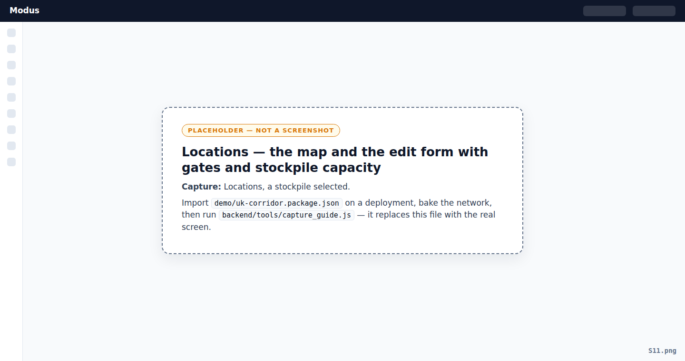
- Add a location by clicking on the map in add mode, then complete the form: name, type (Quarry, Port, Compound, Site, Railhead, Stockpile, Other), what it supplies and receives (material categories — a route can only be created between an origin that supplies and a destination that receives the same category), operator and detail.
- Drag a marker to move a location; every route using it is re-routed automatically.
- Gates — a location can have several. Each has a direction (access, egress or both), a default flag, and two planning times: induction (safety briefing, applied once per arrival at that gate) and gate-to-face travel (ignored on routes that use a drawn haul road, which carries its own time). Routes start and end at gates, not at the site marker. A route can name a specific gate at either end; otherwise the location's default gate is used. A deactivated gate that a route still names stops that route from routing until the route is re-pointed.
- Stockpile capacity — for stockpiles and other storage, record the capacity (tonnes or m³) and the opening quantity. Without a capacity a stockpile can never show as over; the map draws it with a dashed outline to say so.
- Deleting a location cascades to its routes; the confirmation says what goes.
7.2 Routes
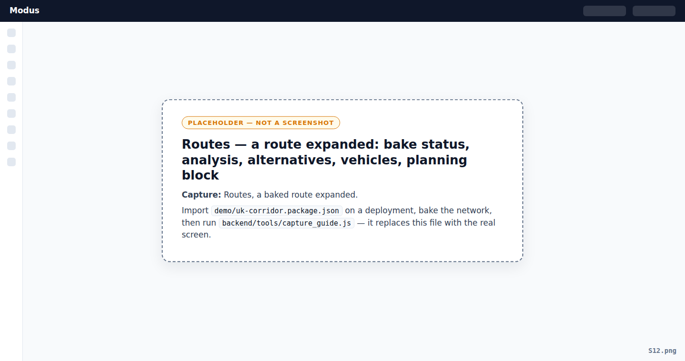
- Create a route from an origin and destination (only valid pairs are offered; the id is assigned as R001, R002 …). Set the material category and, if the route belongs to one team, the team.
- Bake — pressing Bake asks the routing service for the route as driven by each ticked vehicle: out laden and back empty, both as a truck of that weight, height and axle count. "Baked" is per vehicle; the chips show fully baked (green) or outbound-only (amber). Bake all runs the whole network in batches; the cost estimate counts calls, and a route with a temporary haul road costs more.
- Route analysis row — km and drive time per leg, turnaround, cycle time, trips per day, tonnes per day and per month for each vehicle. A ‡ marks a cycle that includes a gate induction figure or an estimated return leg.
- Alternatives — the routing service returns up to three options; the extra ones are shown when a route is selected. Use this option promotes an alternative to be the primary. A promotion is lost when the route is next baked (a moved location, an edited endpoint, a zone change, a vehicle change or Bake all).
- Vehicles — tick or untick the vehicles a route is baked for. The confirmation names the forecast lines that use each vehicle and warns when the last vehicle would go.
- Edit origin, destination, material or team in place. The impact dialog shows what will change — forecasts and weeks are kept; moving an endpoint clears the cached geometry and that end's gate, and the affected vehicles are re-baked.
- Planning · Look-ahead block — the optional figures the Look-ahead prices and checks against: max vehicles per day (a planning cap that raises ROUTE CAP, never a block), rate per load, rate per tonne, rate per km (the three add up — type what the haulier actually quotes, typically a base per load plus a per-km rate), and the km basis for the per-km rate and t·km (round trip, the default, or loaded leg only). Nothing is pre-filled; a route reads "rate not set" until you type one.
- Road restrictions — only where a restriction provider is connected for your organisation's country (today: Estonia's Tark Tee). check now runs the route against the authority's live restriction data in the background and stores the result with its time; the Look-ahead and the exports show the hits and their age. A re-bake clears the stored check. Elsewhere the card is not shown.
- Diagnostics card — "Check factors" confirms every vehicle is matched to its configuration entry; "Probe" runs a live routing call for one route and shows what the service returned.
7.3 Zones and temporary haul roads
- Disruption zone — draw a polygon on the map, give it a name, a kind (closure, weight limit, works, other), an optional date window and whether it affects routing. When it does, its bounding box is sent to the routing service as an area to avoid, every route crossing it is re-routed, and it draws red on both maps; otherwise it is drawn grey for information. The panel prints the exact box that will be sent before you save. Because the service takes boxes, not shapes, a long diagonal zone blocks more than it should — draw several small ones. Deleting a zone does not put the old route back; deactivating is usually the better choice.
- Temporary haul road — draw a line, give it an assigned speed, and attach it to routes from the route's expanded row (in order, if a route uses more than one). The routing service does not know a road cut last week exists; the platform routes to the road's end, uses your line at your speed, and routes on from the other end. The service's own time is kept alongside so the change is auditable. A road with no speed adds distance but no time and is flagged.
- Zones and haul roads change routes, not forecasts: an approved forecast is not re-warned when its route gets longer. Look at the Dashboard or the Look-ahead after a change.
7.4 Config
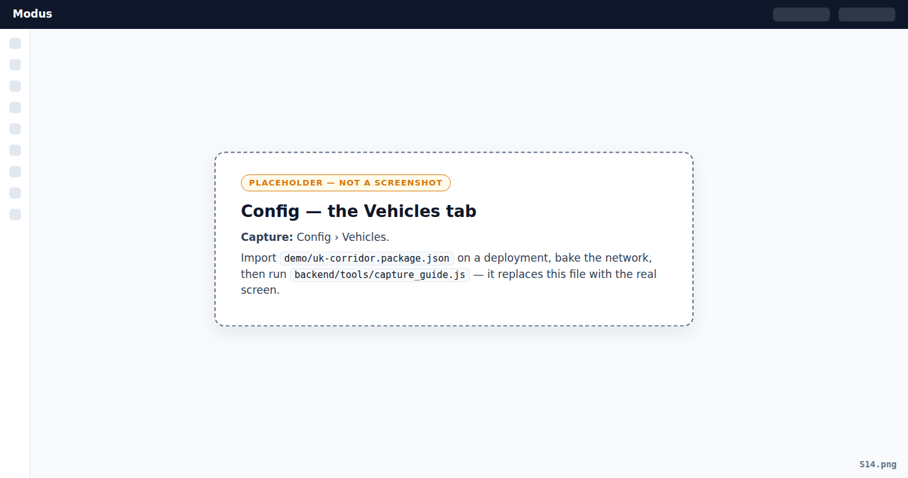
Config holds every number the platform calculates from, on five tabs: Vehicles (gross weight, payload, kg CO₂e per km, load and unload minutes, routing dimensions, labels), Materials (density, default unit, which vehicles are allowed), Planning (working days per month, shift hours per day, fallback load and unload minutes), Seasonal restrictions (month windows, restricted vehicles, the message shown — none by default) and Everything (JSON) for anything the forms do not cover, including your organisation's settings: its name, its word for a team, its currency and its country (the country decides which road-restriction, diesel-price and orthophoto services apply). Save applies the whole document, everywhere, for everyone, immediately; Reset to file restores the defaults shipped with the software. The page says whether the live configuration currently differs from those defaults.
You cannot remove a vehicle that has baked routes (every figure on those routes would silently fall to a hidden default and read the same), set a gross weight below a payload, name a vehicle that does not exist in a material category or a seasonal window, or remove the default routing vehicle. The error lists the problems; nothing is stored until they are fixed.
8. The route map
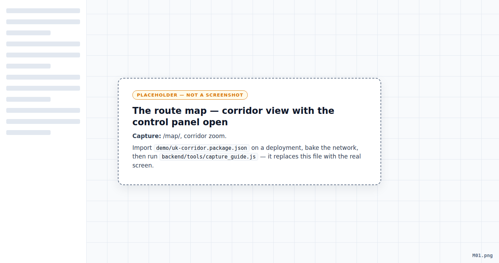
The route map opens with your staff sign-in — signed in to the app, it opens with no further prompt. Someone outside your organisation needs the separate map password, which opens the map and nothing else. Open the site address followed by /map/, or use the Map entry in the staff app. The Control Panel on the left is grouped top to bottom: Route filtering, Basemap, Overlays, Haul routes, Road restrictions and Forecast traffic volume. On a phone the panel is closed by default; the ☰ button opens it.
8.1 Reading the map
| What you see | Meaning |
|---|---|
| Coloured line along the corridor | Your programme's alignment, from the overlay package your organisation supplies, coloured by the team that owns each stretch; a stretch outside your scope is drawn muted. Ticks with labels mark work-section boundaries at chainage; a boundary the package marks provisional says so. Click the line for the team, the work section, its name and the chainage range. Where the survey has no track, the line is bridged and the popup says it is not measured geometry. With no overlay package loaded, no alignment is drawn and the legend says so. |
| Site marks | Seven types, always drawn on top: quarry (circle with a pick), port, site, railhead and compound (squares), stockpile (a gauge), other. A stockpile fills to its recorded stock, turns red over capacity, and has a dashed outline when nobody has recorded a capacity. Click a mark for its details, stock balance and Street View. |
| Dotted green and amber lines | Haul routes: Laden (out) in green and Empty (return) in amber, routed separately for the vehicle. Nothing shows direction — the colours do. Click a route for its analysis (km, drive time per leg, cycle, trips per day) and its forecast detail. |
| Thin grey lines under routes | Alternative routes the routing service offered (off by default). |
| Amber dashed line | A temporary haul road drawn by a planner. |
| Red or grey shapes | Disruption zones: red when they affect routing, grey when informational. With the timeline open, only zones in force that month are shown. |
| Grey dashed corridor | An existing rail network, where your overlay package includes one — reference geometry with the accuracy the package states. Click it for the caveat. |
| Coloured points and lines on roads | Road restrictions from your country's road authority, where one is connected (today: Estonia's Tark Tee): weak bridges, mass, height and width limits, traffic restrictions, diversions. See §8.3. |
| Small grey dots at sites | Site gates (from zoom 10); hollow when deactivated. |
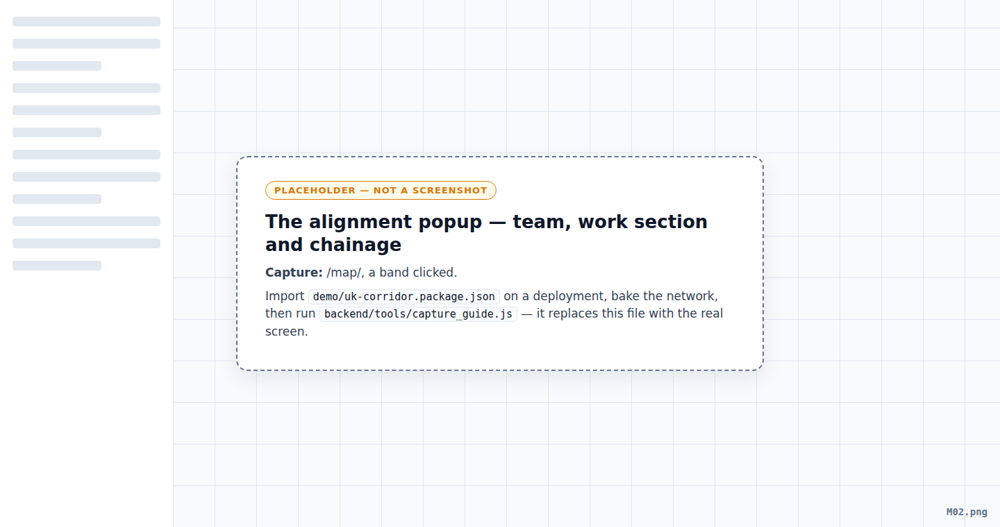
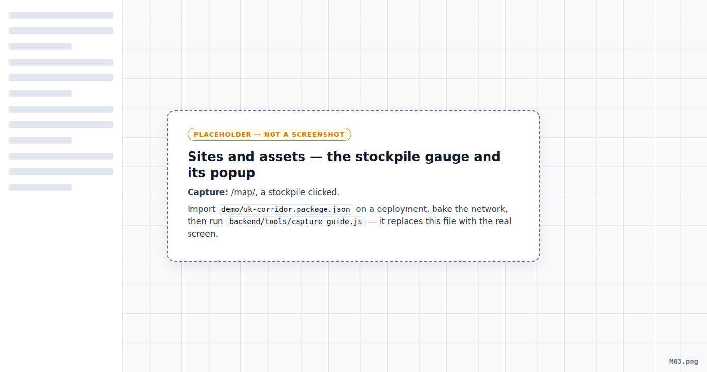
8.2 Filters, basemaps and overlays
- Route filtering — origin, destination, discipline and team. The filters apply to routes, the timeline callouts and the KPI panel. Filter to your team and the timeline shows your traffic only. Reset filters clears them.
- Basemap — Light (default), Standard (3D), Dark and Satellite (Mapbox), plus a national orthophoto where one is connected for your country (today: Estonia's, from Maa-amet). Every overlay survives a basemap switch. 3D buildings are available on the vector basemaps only.
- Overlays — Alignment (by package) with its team legend; Work section boundaries; Alignment (survey, continuous) — the raw survey with every track type, off by default; Chainage markers (thinned by zoom so the corridor is not a smear); Sites & assets with its legend; 3D buildings; Site gates; Disruption zones; Existing rail network.
- Haul routes — Laden (out), Empty (return), Temporary haul, Alternative routes.
- If the alignment legend reads "no alignment in this tenant", your organisation has not loaded an overlay package yet — an admin does that once; see Appendix D.
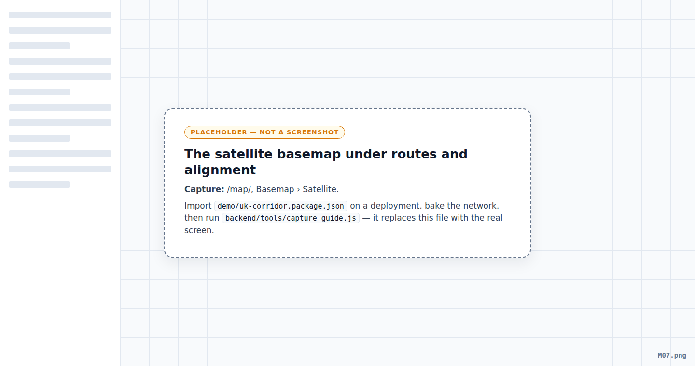
8.3 Road restrictions
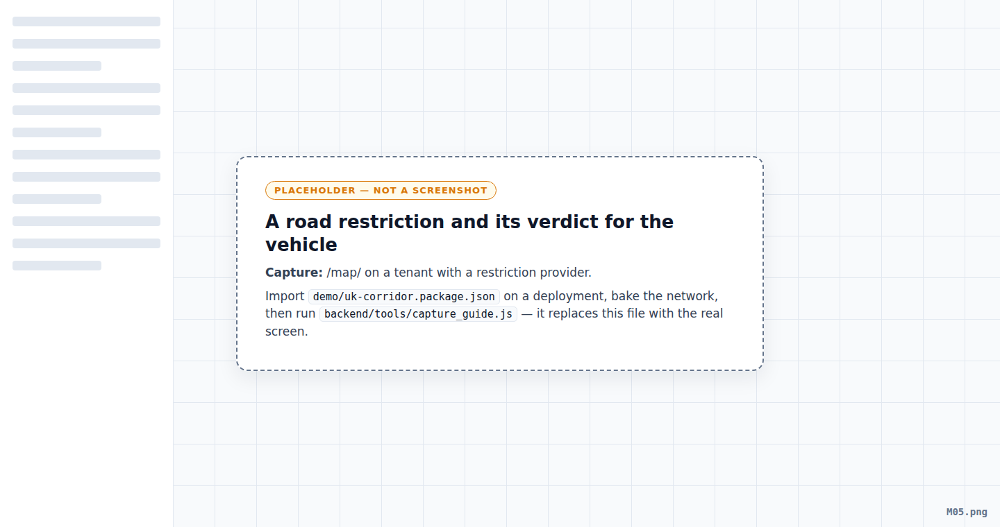
This section applies only where a restriction provider is connected for your country; otherwise the Road restrictions group is not shown at all. Tick a layer under Road restrictions to draw it; the value (for example a 3.2 m height limit) is labelled from zoom 11. Click a restriction near a route for its details and the verdict against the vehicle — "3.2 m limit, vehicle 4.0 m, EXCEEDS by 0.8 m" — for mass, height and width. Weak bridges carry a load *class* rather than a tonnage, so their verdict is "unknown" with the class quoted. The data is live from the provider and refreshes itself every 30 minutes; only restrictions currently in force are shown. It is advisory: routes are not re-planned around it.
8.4 The forecast timeline and KPI panel
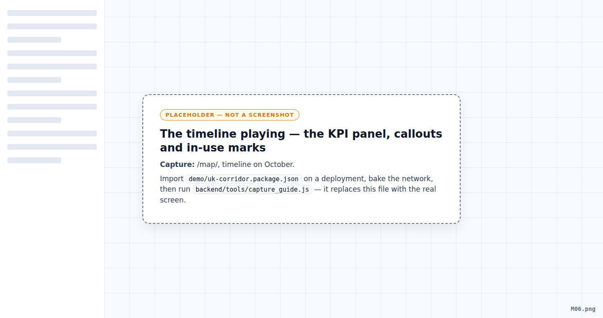
Under Forecast traffic volume, choose a month range and press ▶ Play forecast timeline. The map steps month by month through the approved forecasts: routes carrying volume are drawn, the sites in use get a white ring while everything else dims, small callouts name the busiest origins and destinations, and the KPI panel at the top left reads the month — Movements / day, Vehicles needed, Material / day and Active routes. Use the switcher under the cards to cut the month by Discipline, Team or Work section. ◀ and ▶▶ step a month; × closes the timeline. Forecast detail table opens the month-by-month matrix.
- Vehicles needed is the sum, line by line, of movements per day divided by what one truck can do on that route's cycle — a route that is not baked is counted as unknown and the label says how many lines are unbaked. An empty month shows dashes, not zero.
- At a wide zoom a busy month shows fewer callouts than there are sites: labels that would overlap are dropped, busiest first. Zoom in and they come back.
- The timeline plays approved monthly forecasts. It is a plan, not a live feed.
8.5 Street View
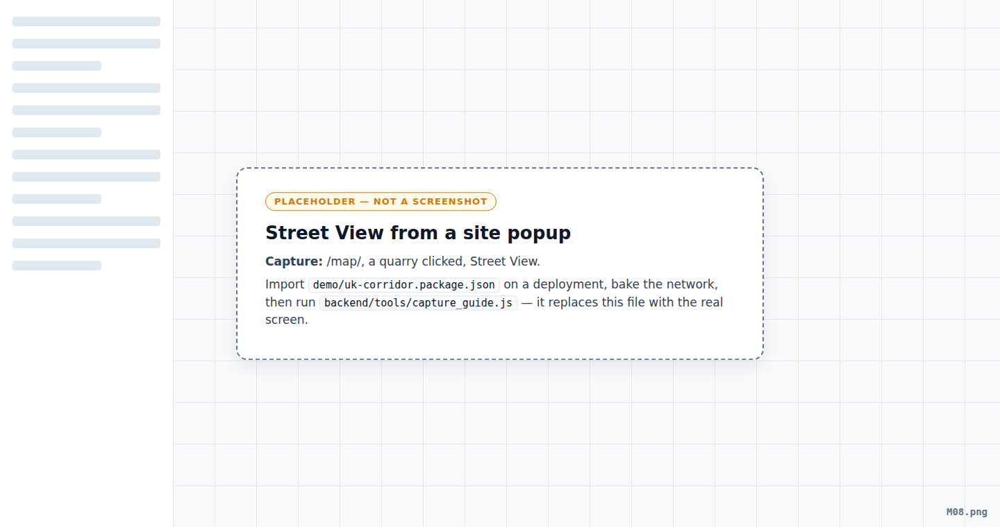
Click a site mark and press Street View for the nearest imagery. "No Street View here" means none exists within 50 m; the map checks for imagery before it fetches a picture, so nothing is spent on empty lookups.
9. Understanding the numbers
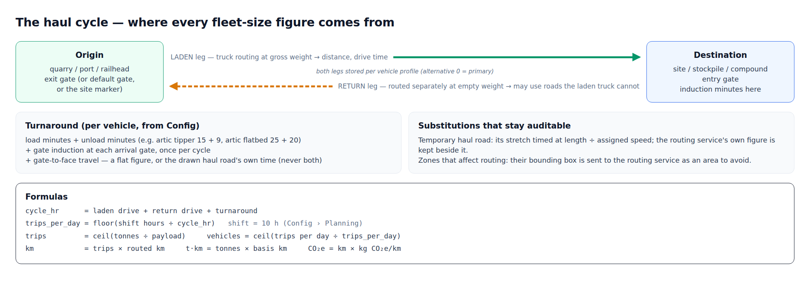
| Figure | How it is derived | What to bear in mind |
|---|---|---|
| Tonnes | m³ × the material category's density; a quantity typed in vehicles × the vehicle's payload. | Densities and payloads are the planning figures in Config, not measured values. |
| Trips (movements, loads) | tonnes ÷ the vehicle's payload, rounded up. One trip is one loaded run. | The payload is a typical carrying limit, not a legal maximum. |
| Movements per day | the month's trips ÷ 22 working days; on the Look-ahead, the week ÷ 5. | 22 and 10 (below) are assumptions and are editable in Config. |
| Cycle time | laden drive time + empty return drive time + load and unload minutes for the vehicle + gate induction (+ gate-to-face travel, or the haul road's own time). | Drive times come from truck routing for the vehicle's weight and dimensions. A ‡ means part of the cycle is estimated (a return leg not yet routed, or a gate figure). |
| Trips per day (one truck) | a 10-hour shift ÷ the cycle time, rounded down. | Because it rounds down, a small change in drive time can change it by a whole trip. |
| Vehicles needed | movements per day ÷ trips per day, rounded up — per line, then summed. | Trucks, not trips. A route not baked for the vehicle gives no figure rather than a guess. |
| km, t·km | trips × the routed km (both legs by default; the loaded leg only where the route's km basis says so); tonnes × the same km. | Km come from the routing service for the primary route. |
| CO₂e | km × the vehicle's kg CO₂e per km. | The factors are stated as a DEFRA/BEIS 2025 basis and have not been traced to the source document — planning figures. |
| Cost | trips × rate per load + tonnes × rate per tonne + trips × km × rate per km — whichever rates are typed on the route, in your organisation's currency. | No rate is pre-filled. Whether a rate includes VAT is whatever you typed. No exchange rate is ever applied. |
| Stock balance | opening + inbound (typed actuals on routes delivering to the stockpile) − consumed (typed on Account). | A week nobody reported counts as nothing in; an unsized stockpile can never be over. |
Every quantity on a sheet is derived from typed forecasts and configured assumptions, not weighed loads or telematics. The supplier PDF says so in its footer: payloads are planning figures, not plated weights; km come from the routing service. Use the figures to plan fleets and spot clashes; do not present them as a delivery record.
10. Flags, chips and warnings
10.1 The Look-ahead clash rail
| Flag | It means | What to do |
|---|---|---|
| SHORTAGE | Last week delivered less than planned and the shortfall has not been carried forward. | On Account, press "spread on this week" — or leave it if the shortfall is not to be recovered. |
| DAYS ≠ WEEK | The typed days no longer add up to the week's plan. | Adjust a day, or accept it — you can still confirm; the export prints both numbers. |
| STOCKPILE OVER | The destination stockpile's forecast balance exceeds its recorded capacity. | Check the Account stock block; type consumption; reschedule inbound. |
| ROUTE CAP | More vehicles on this route on a day than the cap typed on the route — counting every team. | A planner's call: move a day, raise the cap, or accept. |
| SHARE | Another team is on the same route (or the same origin and destination, or the same haul road) on the same day. | Coordinate with the other team; the platform names them but does not show you their quantities. |
| TARK TEE | Only where Estonia's restriction provider is connected: a road restriction on the route's baked geometry, from the stored check; or the check is unavailable or has never run. | Read the hit on the Routes page; press "check now" if it is stale. |
| UNBAKED | The route has no measured geometry for this line's vehicle: trips only, no vehicles, km or t·km. | Ask a planner to bake the route for that vehicle. |
| PARENT CHANGED | The month's approved quantity changed after this week was typed; the week was deliberately not refreshed. | Re-type the week if the new quantity should flow through. |
10.2 Chips and marks
- Team chip and WS chip on every Look-ahead row and Forecasts line — the team chip shows the team's name, and each team keeps one colour.
- Typed marker on a day cell — this day no longer follows the week split.
- ‡ on a cycle — an estimated part (return leg not routed, or a gate induction figure).
- "no team" on a line — a line no team has claimed yet; planners only.
- Red "not baked" on the Submit form and Dashboard — no geometry for the vehicle.
10.3 The route map's warning levels
When the timeline is playing, a stack above it can show up to three warnings for the month on screen: Clash — a stockpile past its capacity; Warning — a road restriction that a visible route's vehicle exceeds; Caution — a seasonal window your configuration defines, matching the month and vehicle. Each can be dismissed for that month. If the stack stays empty for a month you would expect to show something, the sources may not have loaded; reload the page.
11. Troubleshooting
Most of what looks broken here is the platform telling you something true about the data. Pick what you are seeing and it will say which it is.
Still stuck after this? Note which screen, which team and which route, and send it on — that is enough to reproduce almost anything in here.
| Symptom | Likely cause | What to do |
|---|---|---|
| "That access code isn't recognised" | A typo, a trailing space, or the code was rotated. | Retype it; ask a planner for the current code. The old demo codes no longer work. |
| The Look-ahead is empty | No approved line has a week containing today, or your team has no lines. | Check the Forecasts page for Approved lines in this month. The Look-ahead reads Approved lines only. |
| The Look-ahead takes several seconds to open | It reads every line, its days and its routed figures in one go. | Expected on first open; keep the tab open during the meeting. |
| A line shows trips but "veh —" | The route is not baked for that vehicle. | Planner: Routes page → tick the vehicle → Bake. |
| Saving on a Data page returns 403 | The admin token is missing or was pasted incorrectly. | Paste it into the token box on the page (not the address bar) and try one Bake. After a rotation, clear the old token from the box. |
| A page looks stale after an update | The browser cached the old page. | Hard-refresh (empty cache and reload) or open a private window. |
| The PDF map is a drawn schematic | The map image service could not be reached from the server. | The sheet is still correct; the caption says why. Try again later. |
| Map layers vanished after switching the basemap | They re-add automatically; 3D buildings are unavailable on an orthophoto basemap. | Wait a moment; if they do not come back, hard-refresh. |
| Every vehicle on a route shows the same payload and CO₂ | A vehicle name in Config no longer matches its entry, so it fell to a hidden default. | Planner: Routes page → Diagnostics → Check factors; fix the entry in Config. |
| I edited the defaults file but nothing changed | The live configuration is the saved Config, not the file. | Use the Config page; "Reset to file" reloads the defaults. |
| A stockpile never shows as over | No capacity is recorded for it. | Locations → the stockpile → record a capacity and opening quantity. |
Appendix A — Methods and assumptions
This annex states the data sources and assumptions behind the figures, for anyone who has to quote or defend a number. It contains no system internals.
A.1 Data sources
| Source | Used for | Limits to know |
|---|---|---|
| HERE Routing (truck profile) | Every route's geometry, distance and drive time — out laden at gross weight, back at empty weight, routed separately with the vehicle's height, width, length and axle count. | Routes follow HERE's road graph, which can lag a recent road realignment on a construction programme; a route that follows an old road across a field is HERE's geometry, not a data-entry error. Drive times can vary slightly between calls; the km and cycle figures are planning figures. |
| A national road-restriction feed, where connected (today: Estonia's Tark Tee, for organisations whose country is Estonia) | Weak bridges, mass / height / width limits, traffic restrictions and diversions on the route map and in route checks. | Advisory only — routes are not re-planned around it. Weak-bridge load classes are shown as given, without a verdict. Refreshed at least every 30 minutes; the authority's own update cadence is not published. |
| Your alignment overlay package | The corridor line coloured by team, the work-section boundaries and the chainage markers. | As good as the survey it came from. Stretches with no surveyed track are bridged and labelled as not measured; a boundary the package marks provisional is labelled so. |
| Existing rail network (optional, in the overlay package) | The reference corridor for railheads. | Reference geometry with whatever accuracy the package states; labelled on the map. |
| Diesel price | The fuel index behind the fair-price model and the fuel adjustment. | For EU countries, the EU Weekly Oil Bulletin, fetched server-side. Elsewhere an admin types the weekly price (in the UK, for example, the government's weekly road fuel prices). |
| Google Street View | The site thumbnail in the popup. | Only where imagery exists within 50 m. |
| Mapbox, and a national orthophoto where connected | Basemaps and the PDF's route map. | Presentation only. |
A.2 Planning assumptions
| Assumption | Value | Where it applies |
|---|---|---|
| Working days per month | 22 | Movements per day on the map, Dashboard and Submit strip; route cap checks. |
| Shift hours per day | 10 | Trips one truck can make in a day (shift ÷ cycle, rounded down). |
| Week and days | Calendar weeks Monday–Sunday, ISO numbering (a week belongs to the month holding its Thursday); the month splits equally over its 4 or 5 weeks, each week equally over Monday–Friday; Saturday and Sunday 0 unless typed. | The Look-ahead. |
| Delivered | Actual ≥ 98 % of planned. | Account view and the KPI strip ("n of m lines"). |
| Vehicle payloads | Rigid 7.5t 3.5 t · Rigid 4-wheeler (18t) 10 t · Rigid 6-wheeler (26t) 16 t · Rigid 8-wheeler (32t) 20 t · Artic Tipper (44t) 29 t · Artic Flatbed (44t) 28 t · V07 8x4 tipper 18 t · V10 8x4 mixer 19.2 t · V11 artic 25.5 t · V12 artic tipper 26 t | Typical carrying limits, editable in Config. V10's figure is derived from 8 m³ and may be high. |
| Load + unload minutes | Rigid 7.5t 8 + 5 · 4-wheeler 10 + 6 · 6-wheeler 11 + 7 · 8-wheeler 12 + 8 · Artic Tipper 15 + 9 · Artic Flatbed 25 + 20 · EU planning vehicles 12 + 8 (default) | The turnaround in every cycle. Editable estimates, not measured. |
| Emission factors (kg CO₂e per km) | Rigid 7.5t 0.55 · 4-wheeler 0.75 · 6-wheeler 0.85 · 8-wheeler and V07 / V10 0.95 · artics and V11 / V12 0.89 | Stated as a DEFRA/BEIS 2025 basis, average laden; not yet traced to the source document. |
| Material densities (t/m³) | Earthworks / soil 1.5 · Small aggregate 1.6 · Large aggregate / ballast 1.6 · Precast / concrete 2.4 · Steel / rail 7.85 · General / imported 1.5 | m³ ↔ tonnes conversion. |
| Seasonal windows | None by default. Your organisation can define windows in Config — for example a spring-thaw season that flags 44 t artics where axle-weight limits are likely on secondary roads. | Submit form warnings; the map's Caution level. Advisory. |
| Gate times | Induction and gate-to-face minutes per gate, unset until a planner types them. | Added to the cycle at the arrival gate. |
| Haulage cost | Sum of the rate per load, rate per tonne and rate per km × the route's km basis, as typed on the route, in your organisation's currency; no default rates; VAT treatment as typed. Road-user charges are a fleet overhead and are not on any sheet. | Look-ahead cost and the exports. |
A.3 What the platform does not do
- It is not real-time and holds no vehicle positions; the timeline plays approved forecasts.
- It has no time-of-day model: no delivery windows, gate booking or queueing. A daily route cap is compared with an average, not a schedule.
- It does not enforce anything against a planner's judgement: every clash, cap and restriction is a flag.
- It does not invent a distance or a fleet size for a route that has not been routed for the vehicle.
Appendix B — Glossary
| Term | Meaning |
|---|---|
| Team | A delivery team — a package, a contractor, an IPT; the app uses your organisation's word and names — that owns work sections and their forecast lines. Up to six per organisation. When two teams merge, lines keep their original team. |
| Work section (WS) | One of your programme's sections of the works (WS1, WS2 …). Bands overlap on the ground, so the section belongs to the forecast line. |
| Discipline | A branch of the works — earthworks, structures, track and so on — from your organisation's list. |
| Forecast line | One material on one route with one vehicle type, month by month. |
| Route / baked | An origin–destination pair on the network. "Baked" for a vehicle means its geometry, distance and drive time have been fetched from the routing service for that vehicle, out and back. |
| Primary / alternative | The route drawn and used for figures; the other options the routing service offered. A planner can promote an alternative. |
| Gate | An access or egress point on a location where routes start and end; carries induction and gate-to-face minutes. |
| Zone | A drawn area (closure, weight limit, works, other) with an optional date window; when it affects routing, routes avoid it. |
| Temporary haul road | A planner-drawn road with an assigned speed, spliced into routing because the routing service does not know it exists. |
| Cycle | Laden drive + empty return drive + load, unload and gate minutes. Trips per day for one truck = 10 h ÷ cycle, rounded down. |
| Trip / movement / load vs vehicle | One loaded run, versus a truck that makes several runs a day. Vehicles = movements per day ÷ trips per day per truck, rounded up. |
| Planning vehicle | One of the four EU-category profiles (V07, V10, V11, V12) listed first in the vehicle picker. |
| Week | A calendar week, Monday to Sunday, belonging to the month that holds its Thursday. |
| Account / Commit / Horizon | Last week (type actuals) · this week or next week (the plan by day, confirm, export) · the coming weeks as totals. |
| Confirm / re-open | Lock the commit week as the haulier sheet; unlock it to change the plan. |
| Actual | What was delivered in a week or on a day; an empty actual means "not reported". |
| Spread | Carry last week's shortfall into this week over the remaining weekdays; a second press carries only the difference. |
| Stockpile | A storage location with a recorded capacity and a running balance (opening + inbound − consumed). |
| Clash rail | The line of flags on the Look-ahead; flags inform, never block. |
| Chainage | Position along the alignment, shown on the map in metres on the programme's single chainage datum. |
| Overlay package | The alignment, chainage, team bands and boundaries your organisation supplies for the map. Without one, no alignment is drawn. |
| Road-restriction provider | A country's live road-restriction service. Today one is connected: Estonia's Tark Tee (the Estonian Transport Administration). |
| Access code / admin token | The shared code you sign in with; the separate token planners paste to change master data. |
Appendix C — Figures
| Fig. | Caption | File |
|---|---|---|
| 1 | From a typed quantity to trucks on the road | fig-numbers.png |
| 2 | The sign-in screen | S01.png |
| 3 | The staff app — pages in the left rail | fig-app-map.png |
| 4 | The Dashboard — KPI tiles and charts | S02.png |
| 5 | The Stockpile capacity panel on the Dashboard | S03.png |
| 6 | Submit forecast — one line across a year, with the totals strip | S04.png |
| 7 | Forecasts — the ledger with status chips and actions (planner view) | S05.png |
| 8 | Calendar weeks — a month has four or five, each Monday to Sunday | fig-weeks.png |
| 9 | What a planner does on the Look-ahead through the week | fig-rhythm.png |
| 10 | Commit view — KPI strip, clash rail and the Monday–Friday grid | S06.png |
| 11 | A row expanded, and the map of this week's lines under the grid | S07.png |
| 12 | The Confirm week dialog | S10.png |
| 13 | The supplier PDF — one row per line, Monday to Friday, coordinates, route map | S15.png |
| 14 | Account view — planned, actual, variance, cost, and the Stockpiles block | S08.png |
| 15 | Horizon — week totals for this month and next | S09.png |
| 16 | Locations — the map and the edit form with gates and stockpile capacity | S11.png |
| 17 | Routes — a route expanded: bake status, analysis, alternatives, vehicles, planning block | S12.png |
| 18 | Zones — a disruption zone and a haul road with speed and mode | S13.png |
| 19 | Config — the Vehicles tab | S14.png |
| 20 | The route map — corridor view with the control panel open | M01.png |
| 21 | The alignment popup — team, work section and chainage | M02.png |
| 22 | Sites and assets — the stockpile gauge and its popup | M03.png |
| 23 | The satellite basemap under routes and alignment | M07.png |
| 24 | A road restriction and its verdict for the vehicle | M05.png |
| 25 | The timeline playing — the KPI panel, callouts and in-use marks | M06.png |
| 26 | Street View from a site popup | M08.png |
| 27 | The haul cycle — where trips per day and vehicles come from | fig-haul-cycle.png |
Appendix D — Technical reference (admins)
Visible to admins only. It answers “where does that number come from?” in a meeting.
The complete technical guide runs to about fifty pages and is held separately as a Word document. What follows is the part people ask for most. Where the two disagree, the Word document is the one that has been reviewed.
D.1 How a haulage number is made
cycle = drive out (laden) + drive back (tare) + turnaround trips per day = floor(shift hours / cycle) trips needed = ceil(tonnes / payload) vehicles = ceil(movements per day / trips per day)
Both drive legs are routed separately — the return at tare weight, so the way back is not assumed to be the way out reversed and different weight limits can apply. Turnaround is the vehicle's own load and unload minutes, plus gate induction, plus either gate-to-face time or a drawn haul road — never both.
A trip is one loaded run; a vehicle makes several a day. A fleet figure worked out as tonnes ÷ payload alone is a trip count, and overstates the fleet by whatever that multiple is — typically three to six times.
D.2 Which figures are sourced, and which are assumed
| Figure | Standing |
|---|---|
| Route distance and duration | Measured — returned by the routing service for a truck profile with that vehicle's weight and dimensions. Nothing in the platform invents a road. |
| Payloads | Planning assumption. A typical carrying limit, not a plated maximum. It drives trips per tonne, so it is one of the two figures that most changes a fleet size. |
| Emissions (kg CO₂e per vehicle-km) | Unaudited. Stated in the configuration as a DEFRA/BEIS basis; that provenance has never been traced to a document. If a client asks whether the carbon number is DEFRA's, the honest answer is that we believe so and have not checked. |
| Working days per month, shift hours per day | Planning assumptions — and they decide every “trucks per day” figure in the platform. Check these two first when a fleet size looks wrong. |
| Diesel index | Live for EU countries — the EU Weekly Oil Bulletin price for the organisation's country, fetched server-side. The feed does not state whether the series is with or without taxes; it is taken as the taxed series and the widget says so. Typed everywhere else — an admin enters the weekly price, and every figure built on it says it was typed. |
| Fair price | A model, not a quote. Three of its coefficients have no public source and are labelled as assumptions. It reads as a floor for negotiation, which is what it is labelled as everywhere. It is never printed on a supplier's sheet. |
| Rail alignment and chainage | Tenant data — the overlay package the organisation supplies (an admin loads it once). Chainage in metres on one datum, which may start below zero. Its accuracy is the survey's: where a survey has no main-track geometry, a package boundary can have no line beneath it, and the map says so rather than drawing a confident colour. |
| Existing rail corridor | Optional tenant data — as supplied in the overlay package, carrying the package's own caveat. |
| Demo organisation | Fictional. The demo package (a corridor in the English East Midlands) is invented end to end: names, quantities, rates and the alignment. It is not a real railway or a proposal for one. |
D.3 The live sources, and how they fail
- Truck routing — every baked distance and drive time. Its road graph lags the physical road, which on a construction programme matters: roads are realigned for years, and a route baked before a realignment can follow a road that is no longer there.
- Road restrictions (where a provider is connected for the country) — cached, and stored per route with the date it was checked. Mass, height and width give a real verdict; a weak bridge gives a load class, not a tonnage, so it is reported unjudged. The whole layer is advisory. The source carries expired records.
- Diesel price — for EU countries, refreshed in the background, never on the page read. A failed fetch keeps the last good figure and says when it failed. Elsewhere there is nothing to fetch: the price is typed.
- Loading an organisation — an admin imports a whole organisation as one package file
(
POST /api/admin/tenant/import, into an empty organisation) and loads the map overlay (PUT /api/admin/overlay);GET /api/admin/tenant/exportwrites the organisation back out as one file. After an import, bake the network: imported routes read "not baked" until then. - Basemaps and Street View — optional. With no key the popups simply show no photo.
Normal operation sends site and route coordinates to the routing, mapping and restriction services, and a coordinate to Street View where it is used. No quantity, rate or forecast leaves. This is inherent to any routed map product — the alternative is not having routing — but it is a fair question and better answered before it is asked.
D.4 What must not be described as finished
Access is a shared code per role, checked by the server, plus a shared password for the map. There is no per-person identity, no rate limit and no audit trail of who changed what. Per-person logins are the next security phase. Do not describe the deployment as secure until they exist.
Some admin actions are additionally protected by a token. While that token is unset, those actions are open to anyone who can reach them.